Разработка алгоритма, составление, отладка и выполнение программы линейного вычислительного процесса
Выполнить задания (см. ниже). Файлы с выполненными заданиями сохранять в личной папке в каталоге pr5. Имена файлов указаны в заданиях (см. ниже).
Оформить в MS Word отчет о практической работе, включающий:
- тему практической работы (ПР)
- цель работы
- задание 1 на ПР
- листинг программы задания 1 (стиль
Программный кодсо шрифтомCourier New) - результат выполнения программы задания 1 (скриншот, аккуратно обрезанный)
- контрольные вопросы и ответы на них
- выводы по работе
... и так для каждого задания ...
Отчет распечатать и представить при защите ПР.
Задания
Задание 1. Составитить блок-схему алгоритма и линейную программу, которая позволяет ввести значения переменных и вычислить указанные выражения по формулам.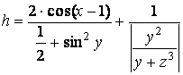
 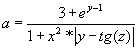
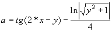
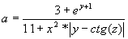
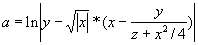
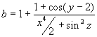
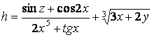
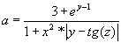
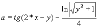
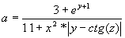
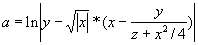
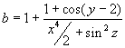
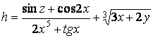
34 78 27 34 98 34 9334 78 27 34 98 34 93 2734 78 27 34 98 34 93 27 3834 78 27 34 98 34 93 27 19 3734 97 52 16 39 66 4577 38 43 12 20 62 9541 30 79 93 35 45 3436 52 74 23 97 50 7043 7 17 34 8 34 3 121 17 2 34 81 34 9 2 1534 8 5 13 8 13 66 43 6 41 1 2 13 3 24 8334 78 27 34 98 34 93 2734 78 27 34 98 34 93 27
Для считывания используется единственная функцияscanf(). При этом считываются
2-е, 3-е, 4-е и 6-е1-е, 3-е, 6-е и 8-е3-е, 5-е, 6-е и 9-е1-е, 5-е, 7-е и 9-е1-е, 2-е, 4-е и 7-е2-е, 3-е, 5-е и 7-е1-е, 4-е, 6-е и 7-е1-е, 2-е, 5-е и 6-е1-е, 3-е, 5-е и 6-е2-е, 4-е, 6-е и 9-е1-е, 3-е, 4-е и 7-е3-е, 5-е, 8-е и 9-е2-е, 4-е, 5-е и 7-е2-е, 4-е, 5-е и 7-е
значения и соответственно записываются в переменные
a, b, c, dz, y, x, fpp, g, m1, ddd, v, a, wa, b, c, da, b, c, da, b, c, da, b, c, doh, co, m, uu, lo, os, erco, me, on, ui, ba, d, ssq, h, line, nmp1, d_a, p_a, w.
Определить с помощью возвращаемого значения функции
scanf() и вывести на экран количество успешно считанных значений.Вывести на экран с помощью функции printf() значение переменной
azppddaaaaohucoisqp1
три раза: до применения, с применением операции префиксной формы инкремента и после нее.
Вывести на экран с помощью функции printf() значение переменной
bygvbbbbcolomebahd_a
три раза: до применения, с применением операции постфиксной формы инкремента и после нее.
Вывести на экран с помощью функции printf() значение переменной
cxm1accccmosondlinep_a
три раза: до применения, с применением операции префиксной формы декремента и после нее.
Вывести на экран с помощью функции printf() значение переменной
dfdwdddduerusnmw
три раза: до применения, с применением операции постфиксной формы декремента и после нее.
34%78 *27 34:98:34# 9334-78 (27) 34^98*34 93-1234+78*27 "34" 98$34$93 23#1234% 78!27 ^34#98#34 93?12 19!2334%97 *52 16:39:66#4577 38 %43*12#20:62, 9541# 30:79:93 35 *45% 3436%52* 74^23 :97 * 50#7034!7@ 27;3 98:34 #934 %8*27;34 8:34# 3!62 14 8* 27 4!98@4 #93 $34 78 !7@34$8;34# 1934 <78> 27;34 "98" 34*93\12/1934 <78> 27;34 "98" 34*93\12/19
Для считывания используется единственная функцияscanf(). При этом считываются
1-е, 3-е, 6-е и 7-е4-е, 5-е, 6-е и 8-е2-е, 6-е, 8-е, 9-е3-е, 4-е, 6-е, 10-е1-е, 2-е, 4-е и 7-е2-е, 3-е, 5-е и 7-е1-е, 4-е, 6-е и 7-е1-е, 2-е, 5-е и 6-е1-е, 2-е, 4-е и 7-е2-е, 4-е, 6-е и 8-е1-е, 3-е, 5-е и 8-е3-е, 4-е, 6-е и 7-е1-е, 3-е, 7-е, 9-е1-е, 3-е, 7-е, 9-е
значения и соответственно записываются в переменные
first, u, v, f1pr, gu2, gu3, swg, k_d, w, m1p, j_1, j_2, pwx, sec, v1, fx, y, third, zq, w, v, fourthne, n, noi, u_uco, me, h, erese, con, d, uho, wmuc, h, isoh, i, di, ditfw, mt, n, r2nn, mm, kh, s.
Определить с помощью возвращаемого значения функции
scanf() и вывести на экран количество успешно считанных значений.Вывести значения всех считанных переменных на экран.
С помощью сокращенной операции сложения к переменнойвычитания из переменнойумножения переменнуювычитания из переменнойсложения к переменнойвычитания из переменнойумножения переменнуюделения переменнуювычитания из переменнойсложения к переменнойумножения переменнуювычитания из переменнойумножения переменнуюсложения к переменной
firstgu2wgpwxxqnemesehoimtnn
прибавить значениевычесть значениеперемножить со значениемвычесть значениеприбавить значениевычесть значениеумножить на значениеразделить на значениевычесть значениеприбавить значениеумножить на значениевычесть значениеумножить на значениеприбавить значение
переменной
vgu3wpv1thirdvnoihdwmucdinkh.
Поменять местами значения переменных
uprk_dj_1secywncoconisditfwmm
и
f1sm1 j_2fzfourthu_uereuhohr2s.
Вывести новые значения переменных на экран. Вы полностью закончили практическую работу № 5? И показали выполненные задания преподавателю?
Поздравляю! У Вас есть шанс успеть оформить работу прямо сейчас, а дома только распечатать. Приступайте!
Контрольные вопросы
- Способы описания алгоритмов
- Графический способ описания алгоритмов
- Основные символы данных
- Блок, используемый для вывода информации в документ
- Символ процесса
- Как перенести часть блок-схемы на новую страницу?
- Спецификатор %p
- Спецификатор %n вывода данных
- Спецификатор %n ввода данных
- Использование набора сканируемых символов